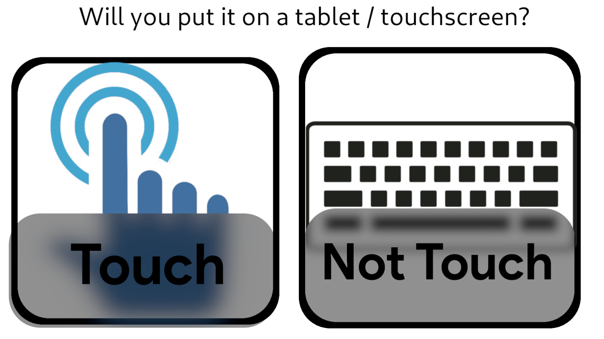

To do, make a database storing distro's and their details, and make this page ask questions, give back the results to either the JS or itself for the recommendations page which makes a list of best fit distro's and gives reasons too
mockups are given below
